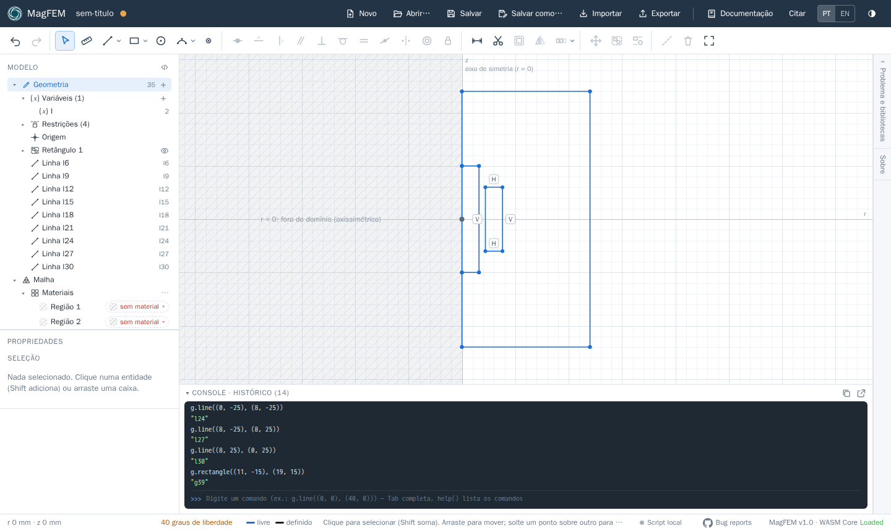
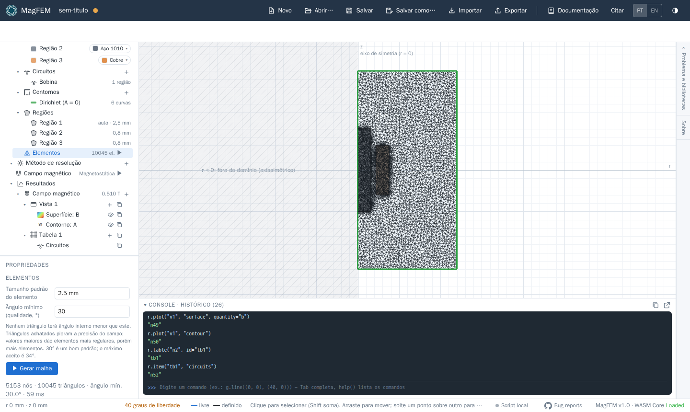
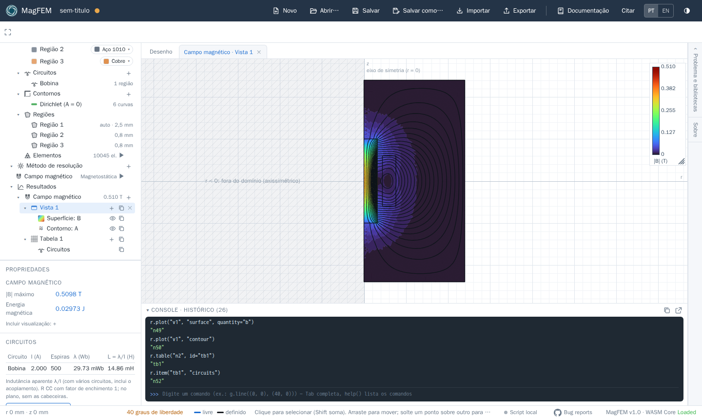
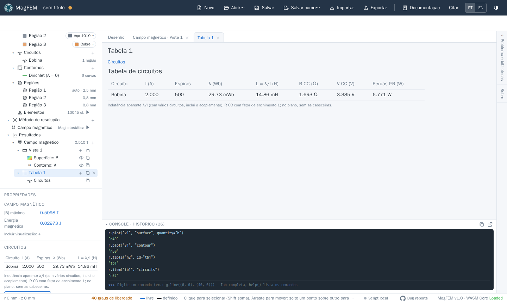

Primeiro modelo: bobina com núcleo
Neste tutorial você monta, resolve e analisa uma bobina axissimétrica com núcleo de aço, parecida com o tutorial de magnetostática do FEMM. No fim, você terá o mapa de |B|, as linhas de fluxo e a indutância da bobina. Leva uns dez minutos.
O modelo (medidas em mm, r na horizontal e z na vertical):
Peça |
r |
z |
Material |
|---|---|---|---|
Núcleo |
0 a 8 |
−25 a 25 |
Aço 1010 (não linear) |
Bobina |
11 a 19 |
−15 a 15 |
Cobre, 500 espiras, 2 A |
Ar (domínio) |
0 a 60 |
−60 a 60 |
Ar |
Atalho: rode o script
Todo o tutorial cabe num script. Cole as linhas do final da página no console (embaixo do canvas), uma de cada vez ou todas pela ponte local, e acompanhe o modelo sendo montado.
1. Problema axissimétrico
Abra a gaveta Problema e bibliotecas (à direita) e escolha Axissimétrico. O eixo vertical passa a ser o eixo de simetria (r = 0): o semiplano r < 0 fica hachurado, porque está fora do domínio. O MagFEM avisa se algum ponto for desenhado ali.
2. Geometria
Com a ferramenta Linha (
L), desenhe o contorno do domínio: suba pelo eixo de (0, −60) a (0, 60) e feche o retângulo até r = 60. Clicar perto de um eixo encaixa o ponto nele.Desenhe o núcleo: de (0, −25) a (8, −25), (8, 25) e de volta ao eixo em (0, 25). Encoste as pontas no eixo: o ponto encaixa na linha do eixo e ganha a restrição “ponto sobre”.
Com Retângulo (
R), desenhe a bobina de (11, −15) a (19, 15).Para fixar as medidas, use Cota (
D) e digite os valores (aceitam unidades e expressões com variáveis).
Por que dividir o eixo?
O eixo foi desenhado em três segmentos (abaixo, ao lado e acima do núcleo). Linhas sobrepostas no mesmo lugar não formam regiões; dividindo o eixo nos pontos onde as peças o tocam, cada região fecha certinho.

3. Materiais, circuito e malha
Em Malha › Materiais, cada região fechada aparece como “Região N”.
Escolha Ar para o domínio, Aço 1010 para o núcleo e Cobre para a bobina. A lista tem busca e inclui a biblioteca do FEMM.
Em Malha › Circuitos, clique em
+e crie o circuito Bobina.Selecione a região da bobina e, nas propriedades, ligue-a ao circuito Bobina com 500 espiras.
A borda externa já entra no contorno Dirichlet (A = 0). No axissimétrico, o eixo também tem A = 0.
Em Malha › Regiões, dê 0,8 mm ao núcleo e à bobina. Em Elementos, use 2,5 mm como tamanho padrão e clique em ▶ para gerar a malha.

4. Resolver
Em Método de resolução › Campo magnético, na seção Correntes, dê ao circuito Bobina a corrente I (a
variável vale 2 A). Depois clique no ▶ de Campo magnético (análise magnetostática). Como o aço tem curva
B-H, o problema é não linear e resolvido por Newton-Raphson; leva menos de um segundo.
5. Resultados
No
+de Resultados › Campo magnético, crie um Mapa de campo. A vista abre numa aba com a superfície |B|; pelo+da vista, inclua um Contorno de A (as linhas de fluxo).Crie uma Tabela e adicione o item Circuitos: ela mostra corrente, espiras, fluxo concatenado λ, indutância L = λ/I, resistência CC e perdas.

Com a malha acima, o resultado é λ ≈ 29,7 mWb e L ≈ 14,9 mH, com |B| máximo de uns 0,51 T no núcleo. Os valores mudam um pouco com a malha; refine e veja a convergência.

6. Experimente
Mude a variável
Ipara 10 A e resolva de novo: o aço começa a saturar e L cai.Troque o aço por Ar e compare a indutância (núcleo de ar).
Crie um Gráfico sobre linha ao longo do eixo para ver B_z(z).
O script completo
Materiais podem ser citados pelo id (mat_air, mat_cu, mat_1010), que vale nos dois idiomas da interface.
reset()
s.add_physics(id="n2")
g.problem("axisymmetric")
g.var("I", "2")
# domínio: o eixo dividido onde o núcleo o toca
g.line((0, -60), (0, -25))
g.line((0, -25), (0, 25))
g.line((0, 25), (0, 60))
g.line((0, 60), (60, 60))
g.line((60, 60), (60, -60))
g.line((60, -60), (0, -60))
# núcleo
g.line((0, -25), (8, -25))
g.line((8, -25), (8, 25))
g.line((8, 25), (0, 25))
# bobina
g.rectangle((11, -15), (19, 15))
# materiais, circuito e malha
m.circuit("Bobina", current="I")
m.region((40, 40), material="mat_air")
m.region((4, 0), material="mat_1010")
m.region((15, 0), material="mat_cu", circuit="Bobina", turns=500)
m.settings("n1", size="2.5 mm")
m.mesh_size((4, 0), "0.8 mm")
m.mesh_size((15, 0), "0.8 mm")
m.generate("n1")
# resolver e ver os resultados
s.solve("n2")
r.view("n2", id="v1")
r.plot("v1", "surface", quantity="b")
r.plot("v1", "contour")
r.table("n2", id="tb1")
r.item("tb1", "circuits")
r.result("Bobina_L") # indutância em H